Blattodea
Blattes
Toutes les cartes et fiches d’élevage des blattes Walfarm Family.
13 espèces
Cartes disponibles
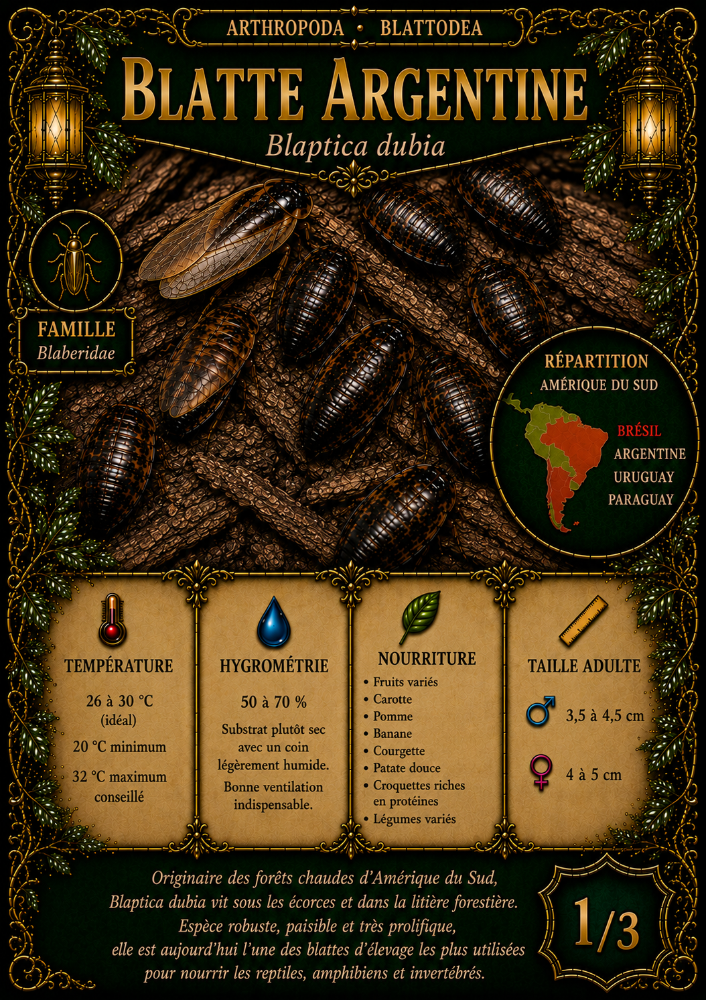
Blattodea
Blatte Argentine
Blaptica dubia
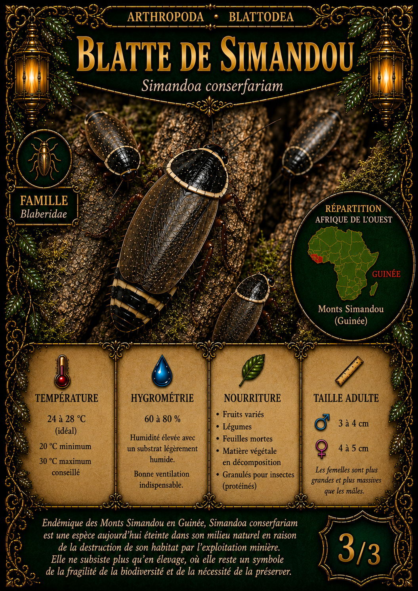
Blattodea
Blatte de Simandou
Simandoa conserfariam
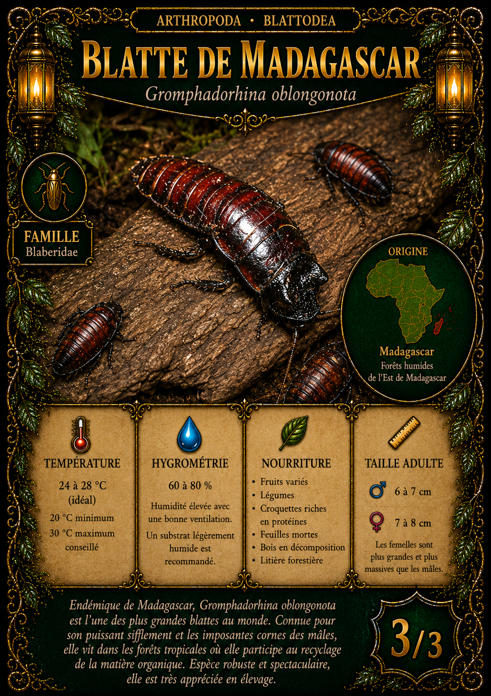
Blattodea
Blatte de Madagascar
Gromphadorhina oblongonota
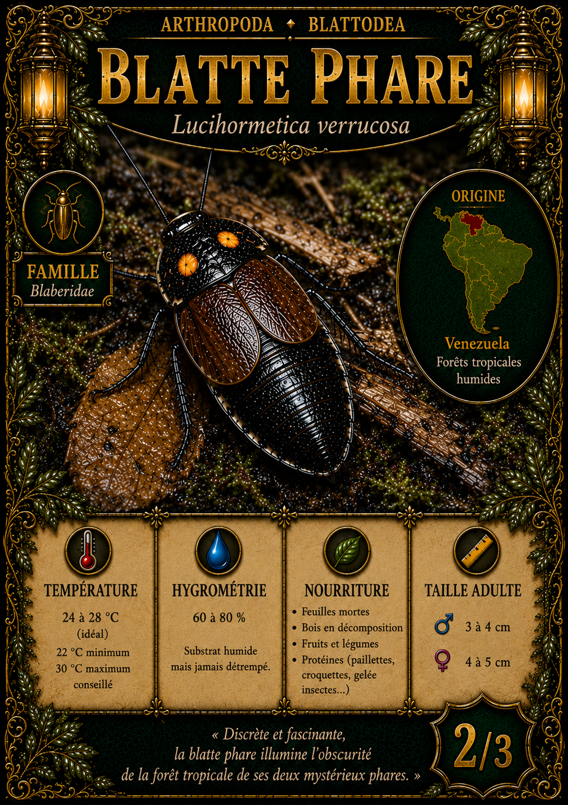
Blattodea
Blatte Phare
Lucihormetica verrucosa
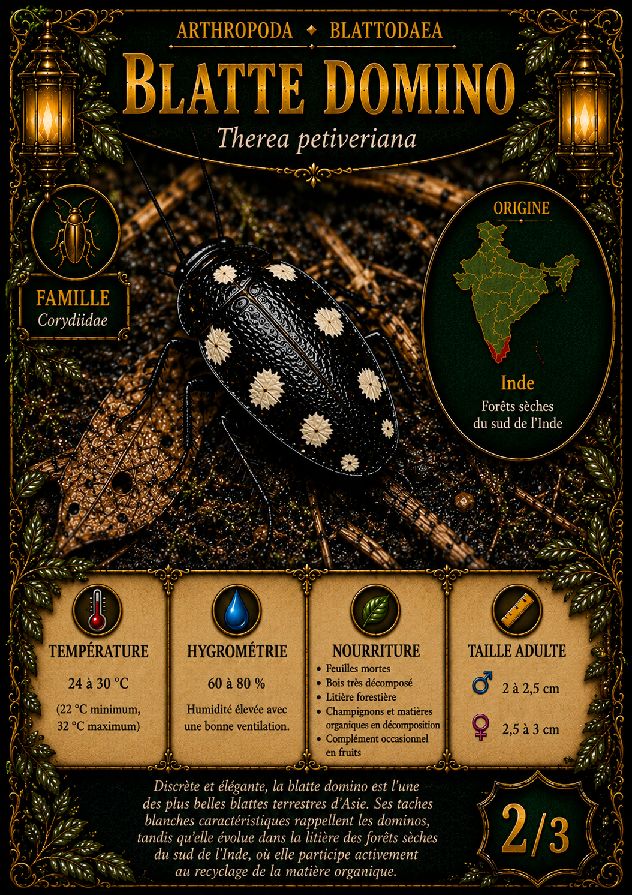
Blattodea
Blatte Domino
Therea petiveriana
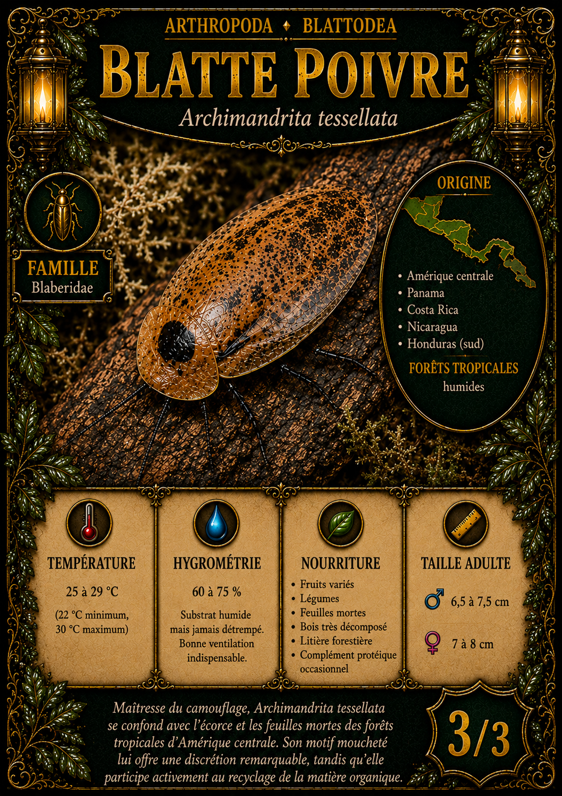
Blattodea
Blatte Poivre
Archimandrita tessellata
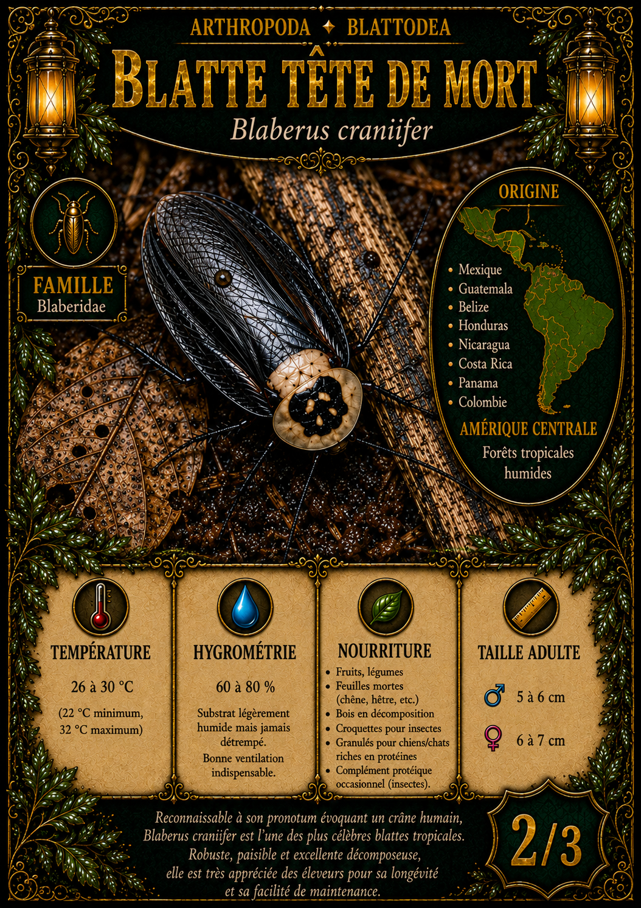
Blattodea
Blatte Tête de Mort
Blaberus craniifer
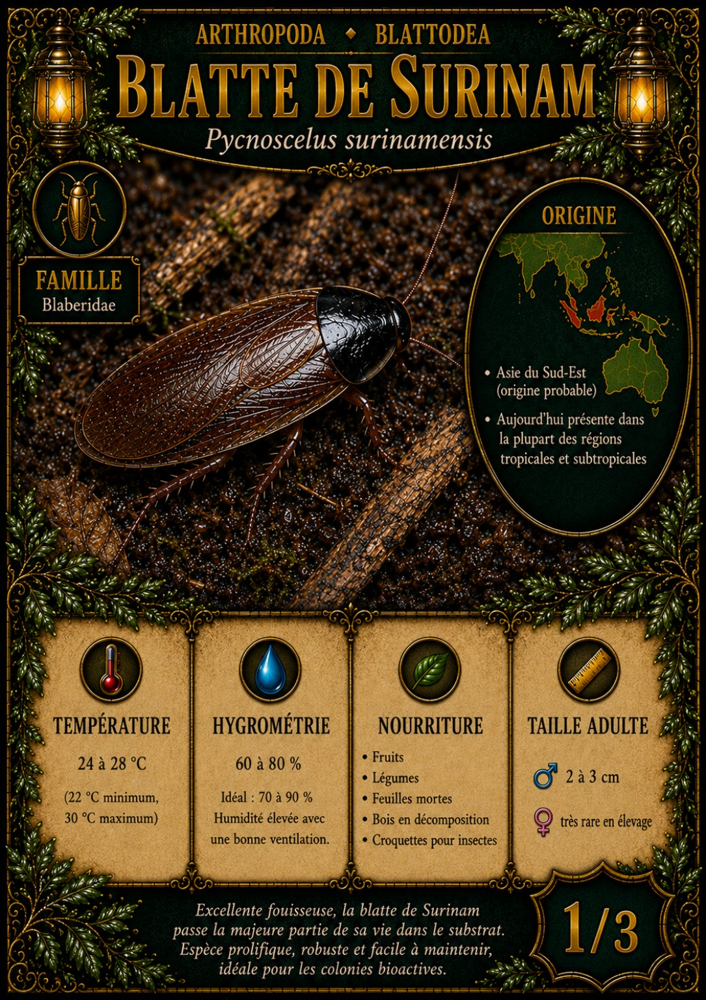
Blattodea
Blatte de Surinam
Pycnoscelus surinamensis
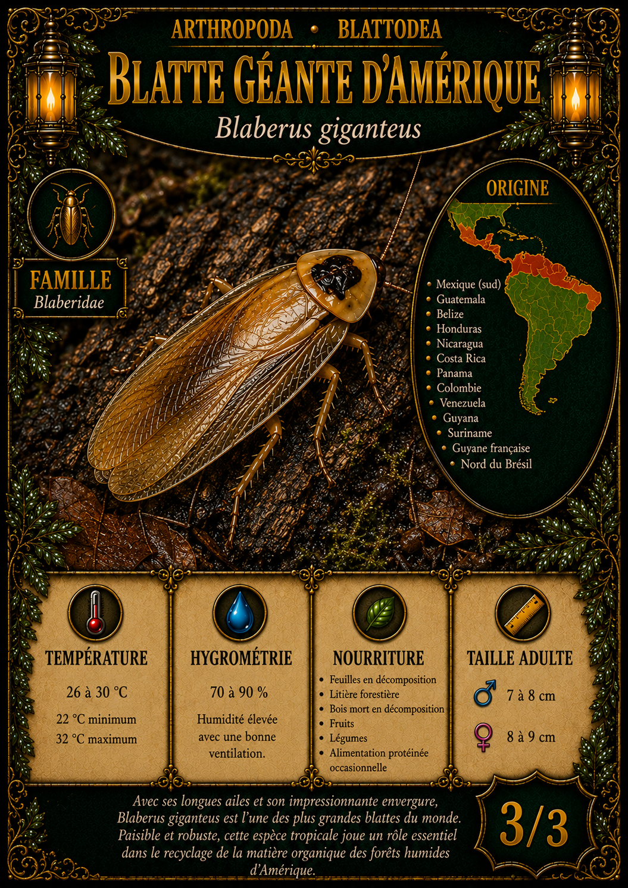
Blattodea
Blatte Géante d’Amérique
Blaberus giganteus
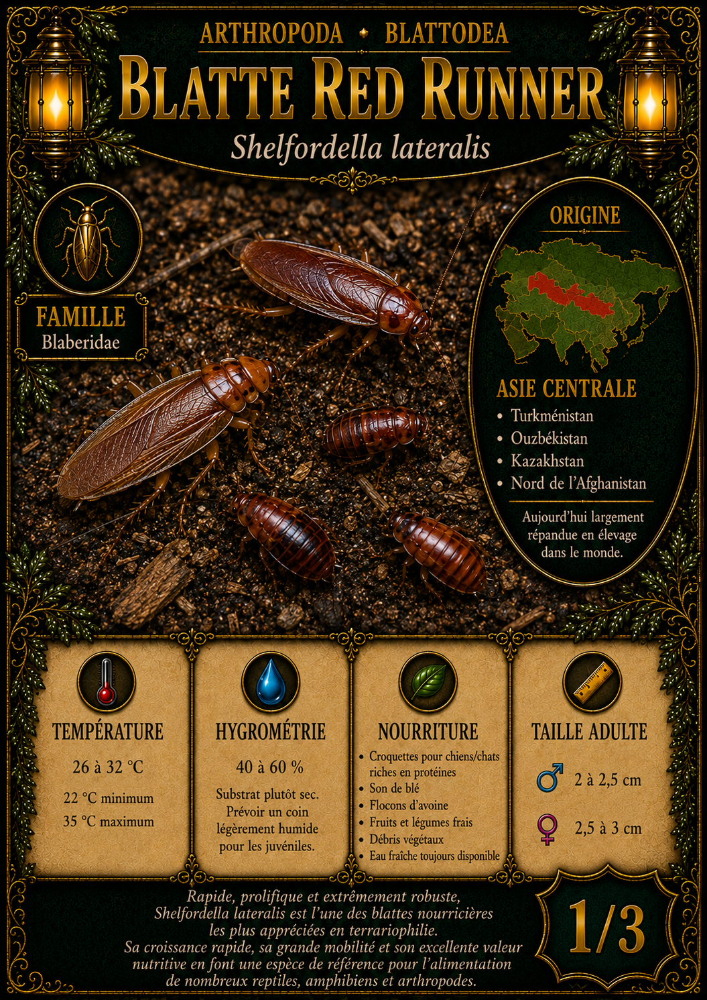
Blattodea
Blatte Red Runner
Shelfordella lateralis
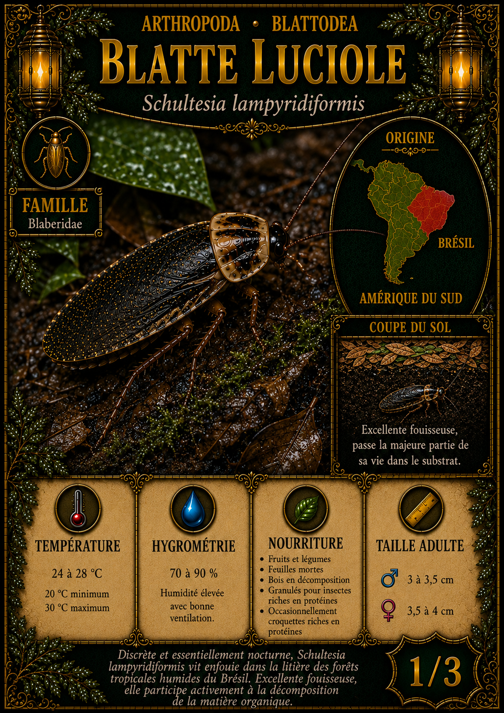
Blattodea
Blatte Luciole
Schultesia lampyridiformis
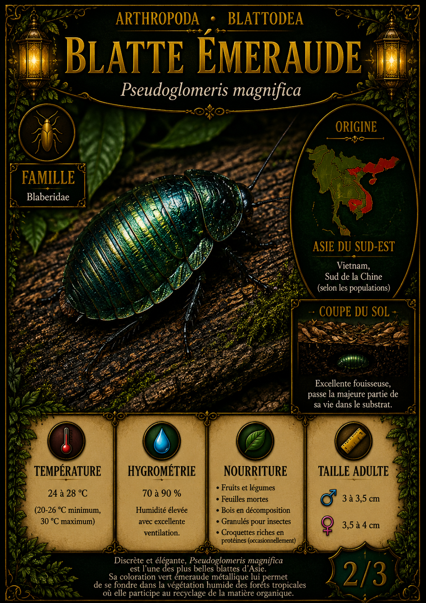
Blattodea
Blatte Émeraude
Pseudoglomeris magnifica
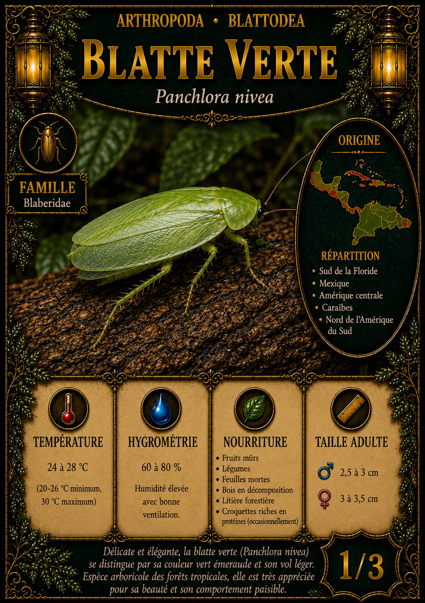
Blattodea
Blatte Verte
Panchlora nivea